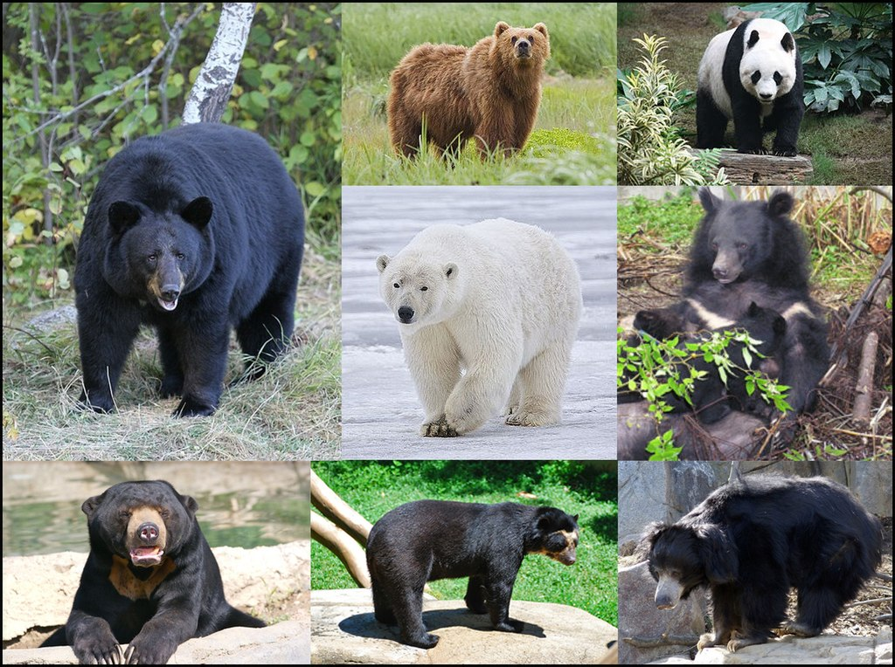
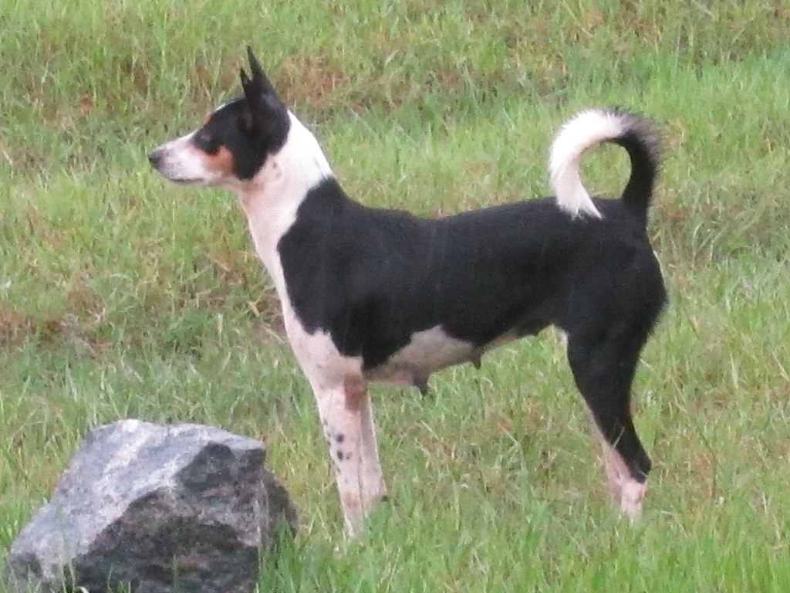

The wolf (Canis lupus), also known as the gray wolf or grey wolf, is a large canine native to Eurasia and North America. More than thirty subspecies of Canis lupus have been recognized, and gray wolves, as colloquially understood, comprise non-domestic/feral subspecies.Flamingos or flamingoes are a type of wading bird in the family Phoenicopteridae, the only bird family in the order Phoenicopteriformes. Four flamingo species are distributed throughout the Americas, including the Caribbean, and two species are native to Africa, Asia, and Europe.

Bears are carnivoran mammals of the family Ursidae. They are classified as caniforms, or doglike carnivorans. Although only eight species of bears are extant, they are widespread, appearing in a wide variety of habitats throughout the Northern Hemisphere and partially in the Southern Hemisphere.

The domestic dog (Canis familiaris or Canis lupus familiaris) is a domesticated form of wolf. The dog descended from an ancient, extinct wolf, with the modern wolf being the dog's nearest living relative.The moose (in North America) or elk (in Eurasia) (Alces alces), is a member of the New World deer subfamily and is the largest and heaviest extant species in the deer family.Pelicans are a genus of large water birds that make up the family Pelecanidae. They are characterized by a long beak and a large throat pouch used for catching prey and draining water from the scooped-up contents before swallowing.Falcons are birds of prey in the genus Falco, which includes about 40 species. Falcons are widely distributed on all continents of the world except Antarctica, though closely related raptors did occur there in the Eocene.The red panda (Ailurus fulgens) is a carnivoran native to the eastern Himalayas and southwestern China. It is listed as Endangered on the IUCN Red List because the wild population is estimated at fewer than 10,000 mature individuals and continues to decline due to habitat loss and fragmentation, poaching, and inbreeding depression.